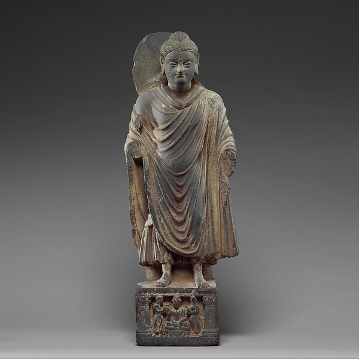

伝承と歴史
仏伝には象徴的な物語も含まれる。史実と信仰上の伝承を区別する。
BUDDHA
ゴータマ・シッダールタの人物像を、伝承と歴史研究を分けながらたどります。

仏伝には象徴的な物語も含まれる。史実と信仰上の伝承を区別する。
苦・老い・病・死に向き合った人物として、その出発点を見る。
何を信じるかより、苦しみがどう生まれるかを観察する。
HISTORICAL PERSON
歴史上の人物として扱うときは、ゴータマ・シッダールタ、あるいは釈迦族の聖者を意味するシャーキャムニといった呼称を使います。後世の仏教では超人的な属性が加えられますが、初期経典に現れる中心像は、苦の原因と終わりを探究し、弟子に実践方法を説く教師です。
生涯の細部には伝承的要素が多く、誕生時の奇跡などを歴史的事実として断定することはできません。一方、出家、修行、覚り、教団形成、各地での説法、晩年という大きな流れは複数の伝承に共有されています。このサイトでは「伝承として重要」と「歴史的に確実」を分けて記述します。
関連経典：MN 26（聖なる探求）
HISTORICAL BUDDHA
北インドで活動した沙門思想家として捉え、後世の神格化された仏像表現とは区別します。
老い・病・死という普遍的問題を背景に、当時の修行文化の中へ身を置いたと伝えられます。
超能力の獲得ではなく、苦の成立条件とその止滅可能性を見抜いた出来事として理解します。
VISUAL ARCHIVE

DEEP READING
ゴータマ・ブッダの生涯については、後世の伝記文学によって豊かな物語が加えられています。王子としての豪華な生活、四門出遊、悪魔マーラとの対決などは仏教文化を理解するうえで重要ですが、成立時期の異なる資料を同じ歴史的確度で扱うことはできません。
初期経典から比較的早い層の自己言及や弟子たちの記憶を読み、後世の象徴的物語と区別することで、「信仰上の仏陀」と「歴史上の人物として推定できる仏陀」の両方を損なわずに理解できます。
「ブッダ」は固有名詞ではなく「目覚めた者」を意味する称号です。初期仏教の文脈では、ゴータマは世界を創造した神としてではなく、苦の原因と終息への道を自ら見いだし、それを他者に教えた人物として描かれます。
この点は、仏教を一神教の枠組みだけで理解しようとすると見落とされやすいところです。崇敬の対象であることと、創造神であることは別です。
初期経典には、形而上学的な問いすべてに答えることを仏陀が重視しなかった場面があります。世界は永遠か、死後に如来は存在するか、といった問いを保留し、苦の終息に直接つながる問題を優先したと伝えられます。
これは思考停止ではなく、問いの優先順位を定める態度として読むことができます。知識を増やすことより、執着・嫌悪・無知がどのように経験を支配するかを見ることを実践の中心に置いたのです。
FURTHER READING
ゴータマが活動した時代の北インドでは、バラモン伝統だけでなく、出家修行者たちによる多様な思想運動が存在していました。苦行、瞑想、輪廻からの解放をめぐる問いは、仏教だけが突然生み出したものではありません。
仏陀の独自性を見るには、当時すでに存在した修行文化を背景に、その中で何を批判し、何を受け継ぎ、どう再構成したのかを見る必要があります。
仏陀の教えが2500年続いた背景には、弟子と共同体の存在があります。舎利弗、目連、阿難、大迦葉、摩訶波闍波提ら、男性・女性の弟子たちが教えを記憶し、実践し、共同体を支えました。
仏教史を仏陀一人の英雄物語として読むと、僧団・在家信者・女性出家者・地域社会が果たした役割が見えなくなります。
神ではなく、一人の探究者から始める。